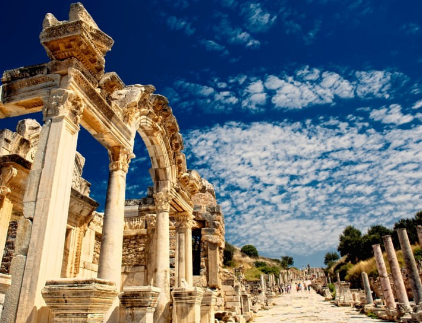

Izmir is a city on Turkey’s Aegean coast. Known as Smyrna in antiquity, it was founded by the Greeks, taken over by the Romans and rebuilt by Alexander the Great before becoming part of the Ottoman Empire in the 15th century. Today, its expansive archaeological sites include the Roman Agora of Smyrna, now an open-air museum. The hilltop Kadifekale, or Velvet Castle, built during Alexander’s reign, overlooks the city
